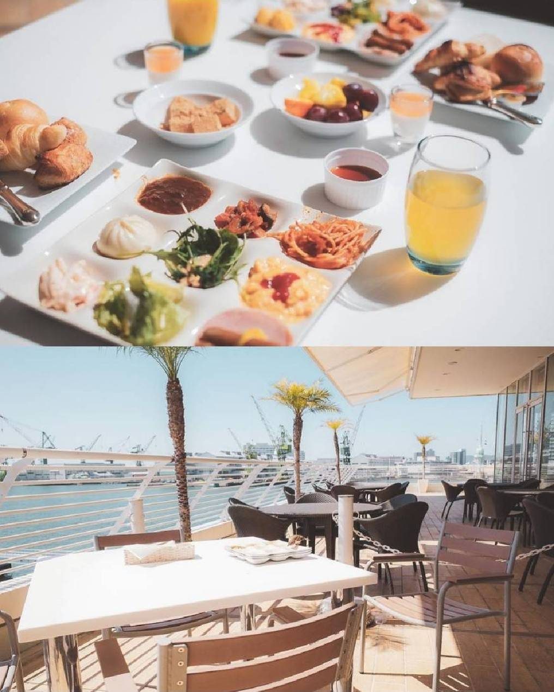

accommodation
ラ・スイート神戸

24時間営業
Access
兵庫県神戸市中央区波止場町
７−２にて
078-371-1111
洗練されたレストランとスパが併設された高級ホテル。
バルコニーとジェットバス付きのエレガントな客室を備えており、
今若者の間ではインスタ映えするホテルとして大人気である。
公式サイト
①②③提供元:ホテル ラ・スイート神戸ハーバーランド
神戸メリケンパークオリエンタルホテル
- 
24時間営業
Access
兵庫県神戸市中央区波止場町５−６にて
078-325-8111
港を一望する明るい客室の洗練されたホテルレストラン5軒、バー1軒、プールがある。
近くにハーバーランドの商業施設『神戸ハーバーランドumie』があり、
神戸の観光客で賑わっている。
公式サイト
神戸ポートピアホテル
24時間営業
Access
兵庫県神戸市中央区港島中町
６丁目１０−１にて
078-302-1111
13軒のレストランとバー、豪華なスパ、屋内プール、
テニスコートを備えた高級宿泊施設。駅や空港からアクセスしやすく、
神戸で知らない人は居ないほど。
ラグジュアリーで開放感のあるエントランスや港町を眺望できる客室が人気。
公式サイト
①②③提供元:神戸ポートピアホテル
ザ・ロイヤルパーク キャンバス 神戸三宮
24時間営業
Access
兵庫県神戸市中央区下山手通
２丁目３－１にて
078-391-1110
宿泊者が無料で利用出来るカフェラウンジを備えており、
客室も個性溢れるオシャレな空間でゆったりとくつろげる。
低価格で泊まれるのでビジネスマンにもぴったり。
立地も良く駅近なので外出も気軽にできるのでおすすめ。
公式サイト
①②③提供元:ザ・ロイヤルパーク キャンバス 神戸三宮
カンデオホテルズ神戸トアロード

24時間営業
Access
兵庫県神戸市中央区三宮町３丁目８−８にて
078-958-6755